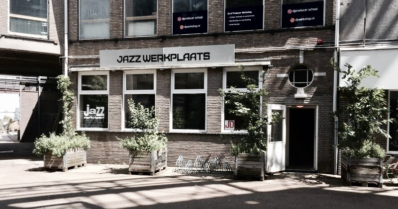

Latin Workshop
Ga de uitdaging samen met het AMPA Latin Ensemble aan!
- Dag
- zaterdag
- Begin
- 15:00
- Einde
- 16:00
- Soort
- Workshop
- Locatie
- Mengers
- Plek
- Jazzwerkplaats
Latin Workshop
Altijd al eens in de wereld van de Cubaanse muziek en salsa willen duiken? Dan is dit iets voor jou!
15:00u tot 16:00u bij de Jazzwerkplaats
Onder leiding van percussie-conservatoriumdocent Michiel Westerhuis gaan we samen met studenten van het Fontys/AMPA Latin Ensemble aan de slag met een paar opzwepende stukken.
Alle instrumenten zijn welkom, vanzelfsprekend ook slagwerkers en percussionisten. Een goede speelvaardigheid en notenkennis zijn wel vereist. Ook goede zangstemmen zijn welkom!
 Mengers
Mengers

Barkade Da Silva Jazzwerkplaats
In de mengfabriek van Koudys werden vroeger ingrediënten van veevoeder gemengd. Tegenwoordig mengen ondernemers er hun kennis en innovaties, kunstenaars hun verf en dj’s hun plaatjes.

“In de Mengfabriek wordt gewerkt aan een circulaire toekomst zonder uitstoot en afval. Dans, muziek, kunst en feest maken daar met klem deel van uit. Samenwerken is hier het motto, wat heb jij in te brengen?”


 Jazzwerkplaats
Jazzwerkplaats

De Jazzwerkplaats vult het gat op tussen de muziekschool en het conservatorium. Onder hun vleugels zijn al legio jonge jazzmuzikanten doorgestroomd naar het conservatorium om vervolgens de Nederlandse jazzpodia te bestormen.
Stichting Jazzwerkplaats Den Bosch zet zich actief in voor de promotie van de Jazz in ‘s-Hertogenbosch. Dit doen ze door middel van het organiseren van diverse activiteiten zoals workshops, concerten en sessies. Ook tijdens RAUWKOST verzorgen ze workshops, sessies en concerten , voor en met jonge Bossche Tijdens RAUWKOST promoten ze de jonge jazzmuzikanten uit de stad en organiseren ze een reünie voor alle oud-leerlingen die de stad al ontvlucht zijn.
Waar dan?